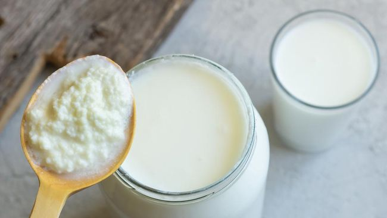

二零二二年 十月 五号
三个原因你一定要开始喝卡菲尔！
卡菲尔到底是什么？
卡菲尔是一种发酵饮料，与酸奶有点一样但对我们身体更加健康。相信吗？来关注我们的检察关于他的好处。
第一：容易准备
除了在超市买一瓶，我们也能在家里准备一瓶健康的卡菲尔。别担心，准备的方法只需要二十四小时，一瓶牛奶，滤网和开菲尔颗粒。 把颗粒放进一瓶牛奶，然后吧那瓶牛奶用一件布盖起来。装在一个黑暗的地方，例如柜子里。
过了二十四小时，过滤颗粒之后，卡菲尔都能喝了。 一个酸酸滑腻的饮料，加一点蜂蜜，都很好喝。如果要跟加酸味，跟多益生菌，那就把过滤的卡菲尔多装二十四小时。现在你的卡菲尔功效非常强大。
第二：卡菲尔的益生菌
卡菲尔的益生菌比酸奶更加多，因为它有十二种好细菌而酸奶只有一到五种。益生菌对我们的身体有许多好处，例如提高身体抵抗力，消化和预防感染。 益生菌是我们肠子里的好细菌。虽然是叫‘细菌’，但有越多的好细菌就等于越少的坏细菌。所以我们身体会更加健康。
第三：乳糖不耐症的人都能喝
牛奶有一种天然糖叫乳糖。大多数华人不能消化它，所以喝牛奶时都会拉肚子。卡菲尔德乳糖比牛奶少的多因为那好细菌把乳糖变成一种酸，让我们的肚子能消化。
学会了这三个原因，你会想要试卡菲尔吗？
-林瑞肯